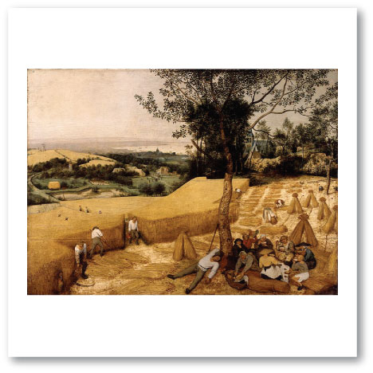
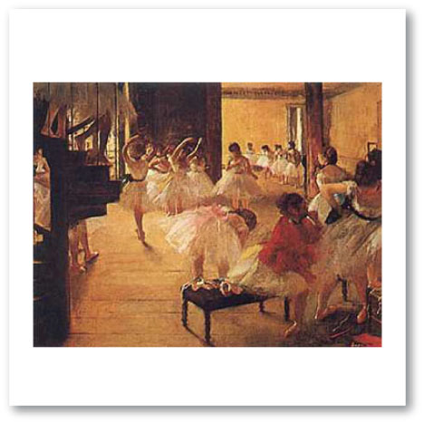
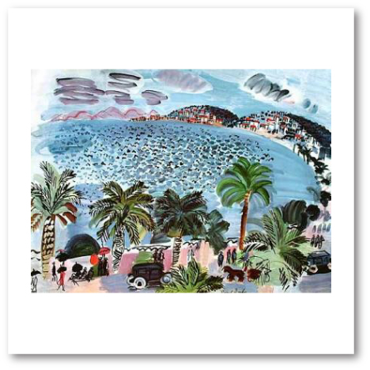
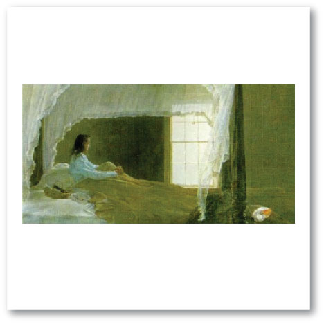
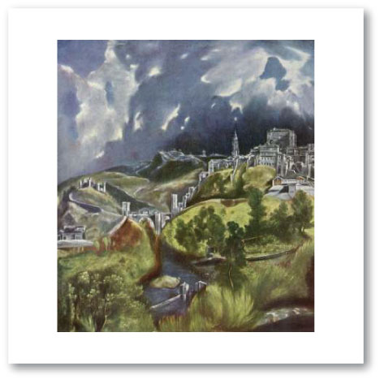
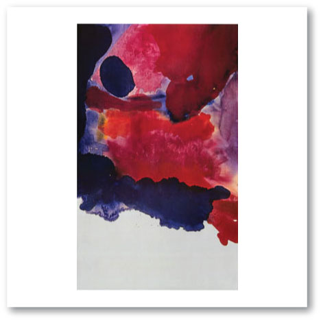

Music: “The Happy Farmer” from “Album for the Young” by Robert Schumann, listen to it here
Art: “The Harvesters” by Pieter Bruegel

Music: “Waltz of the Flowers” by Peter Tchaikovsky, listen to it here
Art: “Ballet School” by Edgar Degas

Music: “Nocturne” by Frederic Chopin, listen to an example here
Art: “Mediterranean Scene” by Raoul Dufy

Music: “Grand Canyon Suite” by Ferde Grofe, listen to it here and here
Art: “Chambered Nautilius” by Andrew Wyeth

Music: "Night on Bald Mountain” by Modest Mussorgsky, listen to it here
Art: “View of Toledo” by El Greco

Music: “Bolero” by Maurice Ravel, listen to it here
Art: “Blue Atmosphere” by Helen Frankenthaler

The links to the music may or may not work. We do not take any responsibility for the content of the linked web pages. Please be aware that comments on YouTube™ are outside our control.